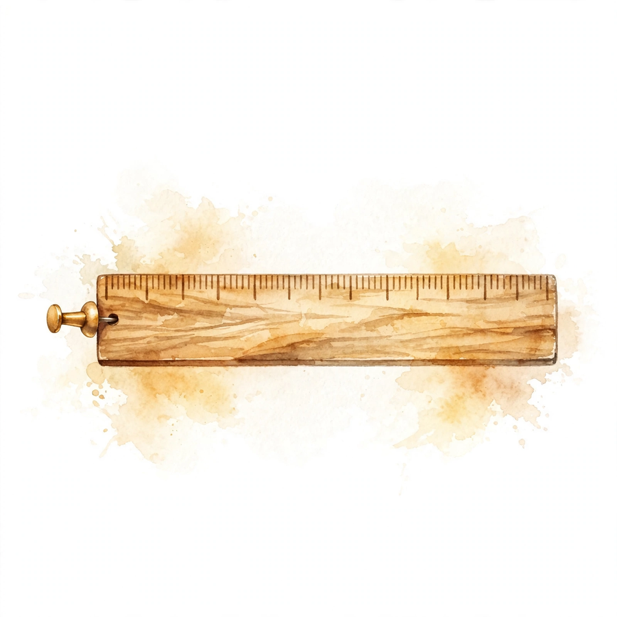

Unit 05 companion · narrated from the lesson document
Quantization, sparsity, and structured operators
Twelve concepts, one arc: how 8 bits stand in for 32, how zeros get skipped for real, and how structured math replaces dense math, all gated by proof of quality.
From the lesson The idea, and every number beside it, comes from the cited section of lesson-05-quantization-sparsity.md. The phrasing is the companion’s.
Illustration Invented by the companion: an analogy, a toy with made-up values, or a what-if. Never lecture content.
companion Companion voice: the idea above the tag is from the lesson. The generalization below it is the companion’s.
Provenance: no lecture transcript exists for this session. Calendar session titles anchor the lesson to Week 4, Oct 14 (Memory Efficient Neural Networks, presented by Simran). This page narrates the lesson document, not a video. Claim class for every lesson leaf: PLANNED / SOURCE ATTRIBUTION PENDING. One internal inconsistency found during the build is disclosed on-page with recomputation (C05 calibration assert).


Scale and zero point: the ruler
From the lessonC01 §2, §3
32 bits carry a float. How do 8 bits stand in? Picture a ruler with 16 marks. The scale s sets the spacing between marks. The zero point z names the mark that means zero. Each float snaps to its nearest mark, and the marks are evenly spaced.
From the lessonC01 §4, §6
s = (max − min) / (2^b − 1), and z = round(−min / s), the integer decoding to 0.0. Forward: x_q = clamp(round(x / s) + z, 0, 2^b − 1). Back: x_hat = s · (x_q − z). The toy with min = −1, max = 1, b = 4: s = 2/15 = 0.1333, z = round(1/0.1333) = 8. For x = 0.5, x_q = round(3.75) + 8 = 12 and x_hat = 0.1333 · 4 = 0.5333, error 0.0333. The lesson’s check: quantize(0.5) = 12, with dequantize(quantize(0)) = 0 exactly.
From the lessonC01 §7, §9
Quantization costs O(N) once and then saves 4x memory traffic on every inference step after, fp32 to int8. But the range must cover the data. A single weight at 100 among values in [−1, 1] stretches s to 101/255 = 0.396, collapsing everything under 0.2 onto one level. Clip the range or go per-channel (C02, C03).
Illustration Ruler lab. Enter a value. The widget applies the lesson’s quantize and dequantize at s = 0.1333, z = 8, 4 bits.
Value x:
Two ways to miss: rounding and clipping
From the lessonC02 §2, §3
Missing comes in two flavors. Rounding: the target lands between marks, with error capped at s/2. Clipping: the target lies past the last mark, with unbounded error. Rounding is the ruler’s price, and clipping means the ruler is wrong.
From the lessonC02 §4, §6
On the same 4-bit ruler at s = 0.1333: x = 0.5 misses by rounding, error 0.0333 within s/2 = 0.0667. x = 1.5 falls past the last mark and clips to level 15, x_hat = 0.1333 · 7 = 0.9333, error 0.5667. Total MSE adds rounding MSE and clipping MSE, and the optimal range balances them (C05).
From the lessonC02 §7, §9
Rounding error stays bounded and predictable, but clipping error does neither. A wider range clips less but coarsens every mark, lifting rounding error. Choosing the range is the tradeoff, and calibration (C05) settles it by measurement.
Per-channel rulers: thermostats
From the lessonC03 §2, §3
One thermostat for the house or one per room? Per-tensor quantization uses a single (s, z) everywhere: the loudest channel dictates the scale while the quiet channel is left with one mark. Per-channel quantization hands every channel its own ruler.
From the lessonC03 §4, §6
The toy: W rows r1 in [−100, 100] and r2 in [−1, 1], 4 bits. Under per-tensor, r2’s values all collapse onto z, a single level. Under per-channel, r2 keeps all 16 levels, and the quiet channel’s MSE falls about 200x against per-tensor. The lesson’s check: per-channel s[0] exceeds 10x s[1], following each row’s own range.
From the lessonC03 §7, §9
Finer granularity always lifts quality and always bills metadata. One (s, z) per channel, or per group of channels in the middle. Per-tensor is one ruler for the house, per-group one per floor, per-channel one per room. Spend granularity where channels differ most.

Weights versus activations: two kinds of luggage
From the lessonC04 §2, §3
Luggage comes in two kinds. Weights are packed at the factory, measured once and quantized once, static. Activations are packed at the gate: each batch measured and quantized live, which is dynamic, or typical batches pre-measured, which is static with calibration.
From the lessonC04 §4, §6
The toy: W (8, 8) static int8, x (8,) dynamic per batch. Weights are known in advance, so their (s, z) freezes. Activations shift per batch, so dynamic quantization measures each one, trading per-batch overhead for a tighter range. The lesson’s check: s stays positive with 0 ≤ z ≤ 255 across the int8 dynamic range.
From the lessonC04 §7, §9
Static costs less at runtime, and dynamic adapts per batch. Static with calibration splits the difference: typical batches are pre-measured once, the range freezes, and the per-batch cost vanishes. The failure mode is distribution shift, where calibration on yesterday’s batches mismeasures today’s.
Calibration: fitting the ruler to the crowd
From the lessonC05 §2, §3
Fitting the ruler to the crowd means ignoring the giant. Min/max fits the tallest person, the outlier, and hands everyone else a bad ruler. A percentile, say 99.9%, fits the crowd while clipping the giant. MSE measured on the crowd picks the winner.
From the lessonC05 §4, §6
The toy: 9999 values in [−1, 1] plus one at 1000. Min/max gives s = 1001/255 = 3.925, and the 99.9 percentile gives s ≈ 2/255 = 0.0078. Rounding MSE grows with s², so min/max runs about (3.925/0.0078)² ≈ 250000x worse on the bulk. The percentile ruler clips a single giant and measures everyone else finely.
From the lessonC05 §7, §9
Calibration turns the range decision into a measurement. Min/max stays hostage to the single largest value, while percentile spends one clip to buy the crowd a fine ruler. When calibration data stops matching deployment, the assumption breaks. Recalibrate as the crowd changes.
From the lessonC05 §6 Disclosed inconsistency. The lesson’s prose toy (9999 values in [−1, 1], one at 1000) gives s = 3.925 for min/max and s ≈ 0.0078 for the percentile, matching the claimed ~250000x MSE ratio. But the lesson’s code toy differs: 999 uniform values plus one at 100.0. On that code, s_mm = 0.3961 and s_pc = 0.2021, so the assert s_mm > 50 * s_pc fails (0.3961 against 10.1074). The prose numbers are correct for the prose toy, but the code asserts a claim its own toy does not satisfy.
Structured versus random sparsity: assigned seating
From the lessonC06 §2, §3
Assigned seating or free choice? With unstructured, random zeros, everyone sits wherever they want and the usher, the hardware, cannot plan ahead. With 2:4 structured sparsity, every group of 4 holds exactly 2 zeros, so the usher recognizes the pattern and skips quickly. Block sparsity empties whole tables: easy to skip, but coarser.
From the lessonC06 §4, §6
The toy: 8 weights in pattern [1,0,0,1, 0,1,1,0]. Each group of 4 carries exactly two zeros, so the pattern is valid 2:4. The pattern [1,1,1,1, 0,0,0,0] packs four zeros into the second group, so it is invalid. The lesson’s check: is_24 accepts the first and rejects the second, and sparse tensor cores exploit the 2:4 pattern directly.
From the lessonC06 §7, §9
Only structured zeros are skippable. Random zeros save nothing without gather support, so the pattern is the product. Block sparsity exchanges granularity for skippability: whole blocks vanish, taking fine detail with them.
Illustration Seating checker. Enter 8 ones and zeros, comma-separated. The widget applies the lesson’s is_24().
Pattern:
Pruning: cutting branches
From the lessonC07 §2, §3
Which weights can go? Picture pruning a tree. Magnitude pruning takes the thinnest branches, the smallest |w|. Sensitivity analysis tests each cut: remove it, measure the loss change, and keep only the harmless cuts. Regression-based methods solve directly for the best sparse fit.
From the lessonC07 §4, §6
The toy: |W| = [0.1, 2.0, 0.05, 1.5]. Pruning 50% zeroes the two smallest, 0.1 and 0.05, leaving [0, 2.0, 0, 1.5]. The lesson’s check: the mask reads [0, 1, 0, 1], exactly the largest half kept. Gradual pruning beats one-shot removal because survivors get time to compensate.
From the lessonC07 §7, §9
Magnitude ranks cheaply, and sensitivity judges truly. Small weights are usually expendable, but usually carries weight here: sensitivity analysis finds the small weight the loss actually needs. Prune gradually and let the survivors compensate.
Realized speed: the toll booths
From the lessonC08 §2, §3
A shortcut through a maze, but the maze charges tolls. Skipping zeros saves steps, yet every index lookup pays a toll. Unstructured sparsity pays per nonzero at the gather booth. 2:4 rides the express lane, sparse tensor cores, where the toll is tiny.
From the lessonC08 §4, §6
The toy: dense GEMM at 100 us. Unstructured 50% spends 50 us on math plus 45 us on gather, totaling 95 us, about 1.05x. 2:4 spends 50 us on math plus 5 us, totaling 55 us, about 1.8x. The lesson’s check: realized(100, 0.5, 0.45) = 95 and realized(100, 0.5, 0.05) = 55. The formula: dense × ((1 − sparsity) + gather_frac).
From the lessonC08 §7, §9
Theoretical sparsity speedups price the toll at zero. It never is. Unstructured sparsity at 50% nets about 1.05x after gather: a tolled shortcut is barely a shortcut. Measure realized time, not the zero count.
realized(): the gather toll (dark band) erases the unstructured win.Illustration Toll calculator. Enter dense time, sparsity, and gather fraction. The widget applies the lesson’s realized().
Dense us:
Sparsity:
Gather fraction:
Butterfly matrices: the tournament bracket
From the lessonC09 §2, §3
A tournament bracket built for mixing. Each factor pairs entries and blends them in 2x2 blocks on a fixed pattern. After log n factors, each output depends on each input: full mixing, FFT-butterfly style, at O(n log n) cost.
From the lessonC09 §4, §6
The toy: n = 8 with factors of 2x2 blocks. Multiplying the log n factors leaves no exact zeros, which verifies full mixing. A dense n x n multiply costs O(n²), and the butterfly factorization costs O(n log n). The lesson’s check: every product entry is nonzero.
From the lessonC09 §7, §9
Structure buys asymptotics, O(n log n) against O(n²) for equal mixing. The fixed pattern means a fixed hardware plan. The price is expressivity, since not every matrix factors this way.
Monarch matrices: city blocks
From the lessonC10 §2, §3
City blocks laced with avenues. Monarch matrices permute the city into districts, mix inside districts along block-diagonal avenues, permute back, then mix across districts. The butterfly pattern generalizes to two block-diagonal factors plus permutations.
From the lessonC10 §4, §6
The toy: n = 16 from two block-diagonal factors plus permutations. The lesson’s check: the product M has shape (16, 16), with Monarch block structure inside each factor. More flexible than butterfly yet still hardware-friendly, because block-diagonal multiplies are dense tiles the hardware already runs fast.
From the lessonC10 §7, §9
Monarch trades some butterfly rigidity for expressivity while keeping the block structure hardware likes. Permutations move data for free, and the block-diagonal factors do the work. When a task outgrows butterfly’s fixed pattern, Monarch is the next rung.
Error propagation: whisper down the lane
From the lessonC11 §2, §3
A whisper down the lane. Each layer contributes its own error and forwards earlier errors, possibly magnified by the layer’s Lipschitz constant, so small per-layer errors can snowball.
From the lessonC11 §4, §6
The bound walks layers back to front, multiplying each layer’s error by every later layer’s amplification. The toy: 2 layers at e = 0.01 each. With lips [1.0, 1.0] the total caps at 0.02, the plain sum. With lips [1.0, 1.5] the first layer’s error grows 1.5x through the later layer, capping the total at 0.01·1.5 + 0.01 = 0.025. The lesson’s check: error_bound matches both.
From the lessonC11 §7, §9
A layer with a large Lipschitz constant magnifies every upstream error, so it keeps its bits. Quantize hard where L sits near 1, and spend precision where L runs large. Across 12 layers, amplification reaching 1.1^11 ≈ 2.85x turns small early errors into large late ones.
Illustration Whisper calculator. Enter per-layer errors and Lipschitz constants as comma-separated lists. The widget applies the lesson’s error_bound().
Errors:
Lipschitz:
Quality validation: the road test
From the lessonC12 §2, §3
Think road test, not weigh-in. Perplexity is one gauge, and the task evals are the road, where a 1% perplexity rise alongside flat task scores ships. Flat perplexity beside a broken long-range task does not.
From the lessonC12 §4, §6
The protocol runs fp16 baseline numbers, then compressed numbers on the same evals, then a delta table, then ship or no-ship against the policy, then a canary in prod. Three gates: perplexity delta, task accuracy deltas, latency and throughput targets. The toy: ppl 12.0 to 12.1 (+0.8%), quiz 4/4 to 4/4, latency 20 to 12 ms gives ship. The counter-toy: ppl flat with long-range retrieval 90% to 70% gives no-ship. The lesson’s check: ship_decision(0.008, 0.0, 12.0) is true while ship_decision(0.008, −0.05, 12.0) is false.
From the lessonC12 §7, §9
Validation spends eval compute, and skipping it spends broken deployments. Perplexity under-predicts long-range task damage, so perplexity alone never gates. Thresholds are policy, declared up front: say ppl +2% max and task −1% max. All three gates must pass.

Illustration Ship gate. Enter perplexity delta, task delta, and latency. The widget applies the lesson’s ship_decision().
PPL delta:
Task delta:
Latency ms:
What this unit buys you
From the lessonC01 to C12
The arc, end to end. Numbers become marks on a ruler with a pinned zero (C01). The misses split into bounded rounding and unbounded clipping (C02). Each channel gets its own ruler when the loud one would rule them all (C03). Weights pack at the factory, activations at the gate (C04). The ruler is fitted to the crowd, not the giant (C05). Zeros get structure the hardware can skip, 2:4 (C06), chosen by magnitude and confirmed by sensitivity (C07). The toll is counted before the shortcut is celebrated (C08). Mixing factorizes into butterflies (C09) and city blocks (C10). Errors whisper down the lane, amplified by Lipschitz (C11), and nothing ships without passing all three gates (C12).
From the lessonUnit chapter plate
The unit chapter plate states the program in one line: “Shrink the bytes. Prove the quality.” The role bridge: the research engineer owns the (s, z) arithmetic and granularity choice as daily inference-optimization tools. MLOps owns the three gates as the ship checklist for every compressed model. The LLM engineer reads error propagation to decide which layers keep their bits. One disclosure stands on this page: the C05 assert fails on the lesson’s own code toy, recomputed above.
The playbook
Every lesson on this page, in order. Tap one to return to its chapter.